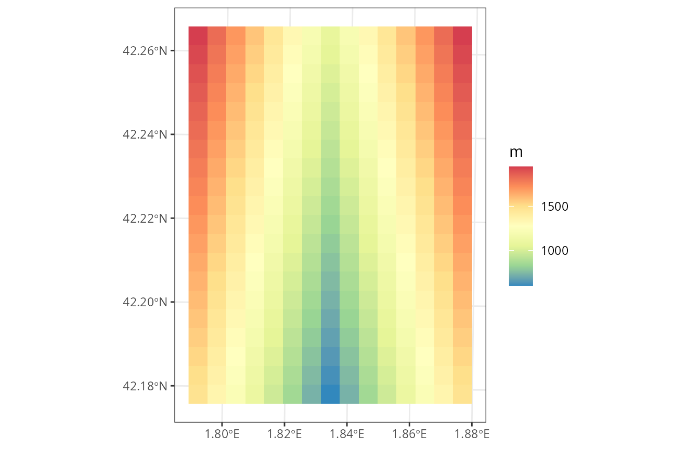
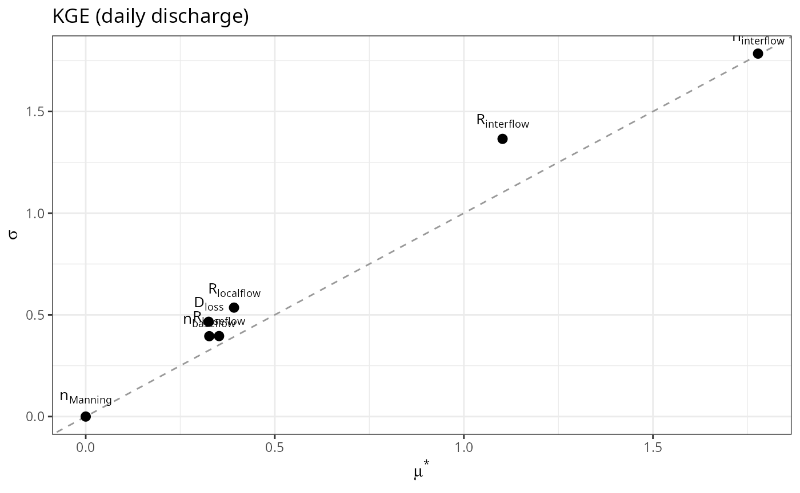
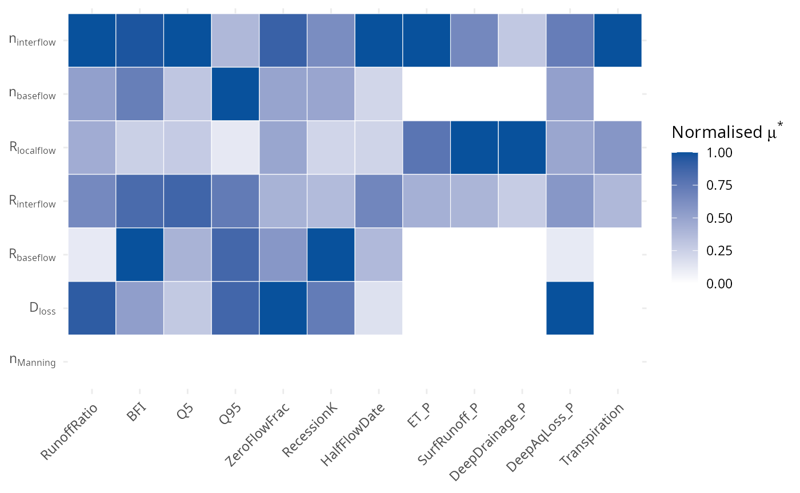

Sensitivity to watershed parameters
Miquel De Cáceres / María González
2026-10-29
Source:vignettes/modelanalysis/TetisWatershedParameters.Rmd
TetisWatershedParameters.RmdIntroduction
The aim of this vignette is to illustrate the sensitivity of
watershed ecohydrological simulations (e.g. via
spwb_land()) to variations in three watershed parameters
for sub-model TETIS. A global sensitivity analysis was carried out to
identify which parameters users should focus on when calibrating
MEDFATELAND and which can be fixed at default values.
Sensitivity analysis procedure
Synthetic catchment
To characterise the hydrological behaviour of the model independently
of a particular catchment, the analysis was performed on a synthetic
catchment of 15 x 20 = 300 cells at 500 m resolution (750 ha),
representing a linear valley with 5% slope and lateral hill slopes with
25% slope. All cells had aforest consisting of a single cohort of Pinus
nigra trees of 8m height, 20 cm DBH and stand LAI = 2; and a soil taken
from a cell in Aiguadora catchment. Daily weather forcing was also taken
from the same catchment. Watershed hydrology simulations were run using
the spwb_land() function and included a warm-up period
(2000-2010) followed by the analysis period (2011-2020).
The following shows the sf object representing the
synthetic catchment:
sensitivity_path = "~/mcaceres_work/model_development/medfateland_sensitivity/data/SA_morris_results_single_DTB40000/"
ws_sf <- sf::st_as_sf(tibble::as_tibble(readRDS(file.path(sensitivity_path,"ws_sf.rds"))))
ws_sf## Simple feature collection with 300 features and 12 fields
## Geometry type: POINT
## Dimension: XY
## Bounding box: xmin: 400250 ymin: 4670250 xmax: 407250 ymax: 4679750
## Projected CRS: WGS 84 / UTM zone 31N
## # A tibble: 300 × 13
## geometry id elevation slope aspect land_cover_type
## <POINT [m]> <int> <dbl> <dbl> <dbl> <chr>
## 1 (400250 4679750) 1 1950 14.3 101. wildland
## 2 (400750 4679750) 2 1825 14.3 101. wildland
## 3 (401250 4679750) 3 1700 14.3 101. wildland
## 4 (401750 4679750) 4 1575 14.3 101. wildland
## 5 (402250 4679750) 5 1450 14.3 101. wildland
## 6 (402750 4679750) 6 1325 14.3 101. wildland
## 7 (403250 4679750) 7 1200 14.3 101. wildland
## 8 (403750 4679750) 8 1075 2.86 180 wildland
## 9 (404250 4679750) 9 1200 14.3 259. wildland
## 10 (404750 4679750) 10 1325 14.3 259. wildland
## # ℹ 290 more rows
## # ℹ 7 more variables: forest <list>, soil <list>, depth_to_bedrock <dbl>,
## # bedrock_conductivity <dbl>, bedrock_porosity <dbl>, channel <lgl>,
## # result_cell <lgl>Another spatial input is needed to describe the grid topology, which
in our case is an object of class SpatRaster from package
terra matching the coordinate definition in the
sf object:
nx <- 15
ny <- 20
res <- 500
xmin <- 400000
ymin <- 4670000
crs <- "epsg:32631"
r <- terra::rast(xmin = xmin, xmax = xmin + nx * res,
ymin = ymin, ymax = ymin + ny * res,
nrows = ny, ncols = nx, crs = crs)The topography of the synthetic watershed looks as follows:
plot_variable(ws_sf, variable = "elevation", r = r)
Design of parameter exploration
The analysis considered the seven effective parameters of the lateral and vertical flow formulation: , , , , , and . The following table provides parameter limits for exploration, as well as default values for a reference run (see below), and indicates whether sampling is performed on a logarithmic scale:
par_def <- data.frame(
name = c("n_interflow", "n_baseflow", "R_localflow", "R_interflow",
"R_baseflow", "deep_aquifer_loss", "n_manning"),
label = c("n[interflow]", "n[baseflow]", "R[localflow]", "R[interflow]",
"R[baseflow]", "D[loss]", "n[Manning]"),
log10 = c(TRUE, FALSE, TRUE, TRUE, TRUE, FALSE, FALSE),
min = c(0.01, 0.01, 0.1, 0.1, 0.1, 0, 0.01),
max = c(2, 2, 20, 20, 20, 5, 0.1),
ref = c(0.08391252, 0.57094430, 0.87305020, 1.65763220,
0.21474088, 3.73822300, 0.06943110),
stringsAsFactors = FALSE
)
par_def## name label log10 min max ref
## 1 n_interflow n[interflow] TRUE 0.01 2.0 0.08391252
## 2 n_baseflow n[baseflow] FALSE 0.01 2.0 0.57094430
## 3 R_localflow R[localflow] TRUE 0.10 20.0 0.87305020
## 4 R_interflow R[interflow] TRUE 0.10 20.0 1.65763220
## 5 R_baseflow R[baseflow] TRUE 0.10 20.0 0.21474088
## 6 deep_aquifer_loss D[loss] FALSE 0.00 5.0 3.73822300
## 7 n_manning n[Manning] FALSE 0.01 0.1 0.06943110As procedure for sensitivity analysis we used the elementary effects
method of Morris, implemented in function morris() (of
package sensitivity), which provides a robust ranking
of parameter importance at a small fraction of the cost of
variance-based methods. Each parameter was sampled over the range given
in the previous table, discretised into six levels, and
trajectories were generated, giving
model runs for
parameters:
r_traj <- 20 # Number of trajectories
n_levels <- 6 # Number of levels for each parameter
# Limits in the sampling scale (logarithmic for some parameters)
binf <- ifelse(par_def$log10, log10(par_def$min), par_def$min)
bsup <- ifelse(par_def$log10, log10(par_def$max), par_def$max)
# Morris design
mo <- sensitivity::morris(model = NULL, factors = par_def$name, r = r_traj,
design = list(type = "oat", levels = n_levels,
grid.jump = n_levels / 2),
binf = binf, bsup = bsup, scale = TRUE)## Registered S3 method overwritten by 'sensitivity':
## method from
## print.src dplyr
dim(mo$X)## [1] 160 7
head(mo$X)## n_interflow n_baseflow R_localflow R_interflow R_baseflow
## [1,] 0.301030 1.204 -0.539794 0.840824 1.301030
## [2,] 0.301030 1.204 -0.539794 0.840824 1.301030
## [3,] 0.301030 1.204 -0.539794 -0.539794 1.301030
## [4,] -1.079588 1.204 -0.539794 -0.539794 1.301030
## [5,] -1.079588 1.204 -0.539794 -0.539794 -0.079588
## [6,] -1.079588 1.204 -0.539794 -0.539794 -0.079588
## deep_aquifer_loss n_manning
## [1,] 2 0.082
## [2,] 2 0.028
## [3,] 2 0.028
## [4,] 2 0.028
## [5,] 2 0.028
## [6,] 5 0.028Simulations
We first run spwb_land() on the synthetic watershed with
parameters calibrated for the Aiguadora catchment. Then, we made
simulations for each of the 160 parameter combinations of the morris
design. Each simulation included 11 years of warm-up simulation,
followed by 10 years of simulation for analysis. Simulations were
conducted using 1D Richards for local soil water flows
(soilDomains = "single"), with a tolerance value
richards_tolerance = 0.00001; and 24 daily substeps were
specified for lateral processes, using the watershed control parameter
num_daily_substeps = 24. For all these runs, we stored the
simulated daily discharge, as well as water balance components
(precipitation, transpiration, runoff…) averaged at the watershed
level.
Response variables
Three groups of response variables were analysed. First, the Kling-Gupta efficiency (KGE) of simulated daily discharge was computed against the simulated discharge in reference simulation run, as an aggregate measure of how much each parameter modifies the hydrograph. Second, six hydrological signatures of the simulated discharge were used to identify which aspect of the hydrological response is controlled by each parameter. Third, the partitioning of precipitation into evapotranspiration, surface runoff, deep drainage and losses to the deep aquifer was analysed to assess whether hydrological parameters also affect the balance between green and blue water, and transpiration was included to evaluate their effect on vegetation functioning.
Morris indices
Morris indices
and
were estimated using function sensitivity::tell() for each
response variable.
values were normalized by response variable to the [0-1] scale, in order
to compare indices between response variables that have different
units.
Results
We read the CSV corresponding to the normalized indices:
morris_indices <- readr::read_csv(file.path(sensitivity_path, "morris_indices.csv"), show_col_types = FALSE)
morris_indices## # A tibble: 112 × 7
## output parameter label mu mu_star sigma mu_star_norm
## <chr> <chr> <chr> <dbl> <dbl> <dbl> <dbl>
## 1 KGE n_interflow n[interflow] 1.08 1.78 1.78 1
## 2 KGE n_baseflow n[baseflow] -0.172 0.327 0.395 0.184
## 3 KGE R_localflow R[localflow] 0.104 0.392 0.536 0.221
## 4 KGE R_interflow R[interflow] -0.191 1.10 1.37 0.620
## 5 KGE R_baseflow R[baseflow] 0.272 0.353 0.396 0.198
## 6 KGE deep_aquifer_loss D[loss] 0.110 0.325 0.466 0.183
## 7 KGE n_manning n[Manning] 0 0 0 0
## 8 KGE_r n_interflow n[interflow] 0.135 0.546 0.614 1
## 9 KGE_r n_baseflow n[baseflow] 0.0410 0.204 0.315 0.375
## 10 KGE_r R_localflow R[localflow] -0.0635 0.128 0.168 0.234
## # ℹ 102 more rowsKGE
d_kge <- subset(morris_indices, output == "KGE")
ggplot(d_kge, aes(mu_star, sigma, label = label)) +
geom_abline(slope = 1, intercept = 0, linetype = 2, colour = "grey60") +
geom_point(size = 2.5) +
geom_text(parse = TRUE, vjust = -0.8, size = 3.5) +
labs(x = expression(mu^"*"), y = expression(sigma), title = "KGE (daily discharge)") +
theme_bw()
Heatmap
heat_out <- c("RunoffRatio", "BFI", "Q5", "Q95", "ZeroFlowFrac", "RecessionK", "HalfFlowDate",
"ET_P", "SurfRunoff_P", "DeepDrainage_P", "DeepAqLoss_P", "Transpiration")
d_heat <- subset(morris_indices, output %in% heat_out)
d_heat$output <- factor(d_heat$output, levels = heat_out)
d_heat$label <- factor(d_heat$label, levels = rev(par_def$label))
ggplot(d_heat, aes(output, label, fill = mu_star_norm)) +
geom_tile(colour = "white") +
scale_fill_gradient(low = "white", high = "#08519c", limits = c(0, 1),
name = expression("Normalised " * mu^"*")) +
scale_y_discrete(labels = function(l) parse(text = l)) +
labs(x = NULL, y = NULL) +
theme_minimal() +
theme(axis.text.x = element_text(angle = 45, hjust = 1))